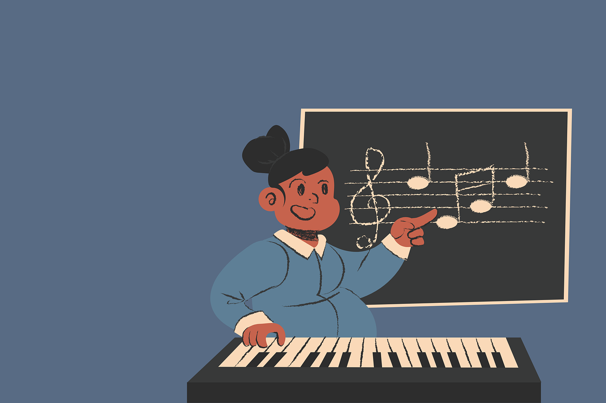

Leçons de Piano
Leçon 1: Comprendre le clavier
Apprends les différentes touches et leur correspondance musicale.
Leçon 2: Les bases du rythme
Apprends à garder le rythme et à jouer des accords simples.
Leçon 3: Jouer avec les deux mains

Développe ta coordination en utilisant les deux mains pour jouer des morceaux basiques.